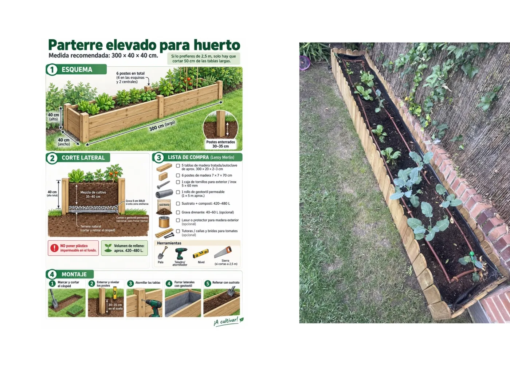
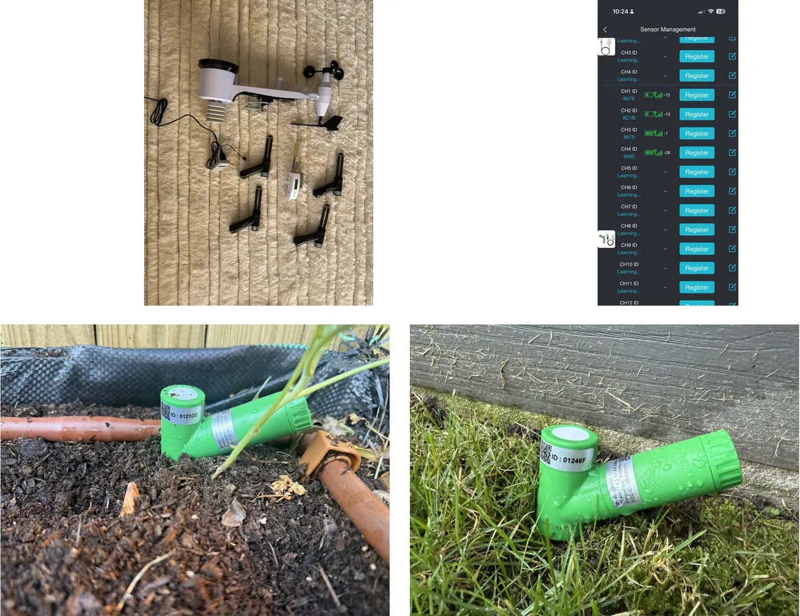

A garden story
I gave an agent a lakehouse and control of my garden
Or how to produce a €60 lettuce.

I guess this is what a mid-life crisis looks like.
I started gardening.
Nothing serious. I have a small garden at home, and I carved out about two square metres on one side to grow some vegetables. I love seeing things grow and, if I can eat them afterwards, even better. I also thought it would be a nice thing to do with the kids.
Although, as I would later discover, the kids were interested for approximately two hours.
This is not an impressive vegetable garden. We're talking about a narrow raised bed with cabbage, broccoli, lettuce and spinach: the usual things you plant going into winter.
And how did I decide what to plant? Obviously, I asked Claude.
How deep should the bed be? Claude. What soil should I buy? Claude. How far apart should the broccoli go? Claude. How much should I water it? You get the idea.

That was probably the moment things started going wrong. Because I started thinking: what else could an agent decide?
First, give the agent some senses
Watering was the obvious one. How much water does a vegetable garden actually need?
I could follow a generic schedule (ten minutes every second day, or whatever), but that seemed a bit stupid. Why not measure the moisture in the soil?
So I bought a soil-moisture sensor. Then I thought: what about the water that appears overnight as dew? Leaf-wetness sensor. Temperature? Sensor. Rainfall? Sensor. Solar radiation? Sensor. Wind? Sure, why not.
A few clicks later I had accidentally built a fully instrumented vegetable garden.

I went with Ecowitt. The sensors are inexpensive and battery powered, and they all talk wirelessly to a small gateway connected to the internet. Installation is ridiculously easy: put the batteries in, push them into the ground, and they show up on the gateway. Today there are eleven: eight soil probes, a weather station, a leaf-wetness sensor and the gateway's own indoor sensor.
In total I spent something like €300 on sensors for a vegetable garden that, if everything goes perfectly, might one day produce €40 worth of vegetables. We were already approaching the €60-lettuce phase of the project.
Suddenly I could measure my garden better than many factories measure their production lines.
Of course I mapped the whole thing
I am also a map geek, so there was no chance I was going to leave the sensors as "probe 1", "probe 2" and "somewhere by the fence". I opened Google Earth and pinned every soil probe, sprinkler, valve box, the weather station and the camera. Those positions went into a table, garden.sensor_placements, next to the readings.

That immediately makes the questions more interesting. Instead of asking "what is soil-ch6 doing?", I can ask why the north-west corner of the lawn is always wetter, or which end of the bed dries fastest. Every measurement has a real position, so the agent can reason about the garden in space as well as in time.
And this is where I become completely unreasonable. There is probably nothing I would enjoy more than a live moisture surface across my own lawn: a little gradient from dry to wet, showing what is happening between the probes. Eight probes are obviously not enough to know the moisture at every centimetre, but they are enough to start seeing patterns, test some interpolation and tell me where the next probe should go. Completely unnecessary. Obviously essential.
But there was still one big problem. I couldn't see it.
So, naturally, I installed a camera
I travel quite a bit. Who was going to tell me whether the plants looked healthy? Certainly not my children.

Now I can watch my two-square-metre farm in glorious 4K, 24 hours a day. Including at night.
Which has already produced one important analytical insight: my neighbour's cat likes to use the vegetable bed as a toilet.
Agent-driven agriculture was already paying dividends.
Now I had data. A lot of data.
At this point I had soil moisture, soil temperature, conductivity, leaf wetness, air temperature and humidity, rain, wind, solar radiation, and pictures of the garden.
Great. But now I had another problem: what do I actually do with all of it?
Is 34 % soil moisture good? How quickly is the soil drying? Did yesterday's watering make any difference? Is the broccoli getting bigger? Should I water today if it might rain tomorrow?
And because I am a data nerd, this time I didn't ask. I already knew the answer: my vegetable garden needed a lakehouse.
Getting the data out of the garden
The measurements were sitting inside the Ecowitt app, which wasn't going to help an agent very much. I needed somewhere for the data to accumulate, somewhere an agent could query the history instead of only seeing the latest value.
This is also, more or less, where LakehouseBox started. The first version of the garden ran on Cloudflare: Iceberg tables in R2, a pipeline per table, a small program to receive the weather station's posts, and a virtual machine on Google Cloud only to relay the camera's uploads. It worked, and it was too many pieces for a vegetable bed.
What I wanted was a small lakehouse where data accumulates permanently and where I can simply give an agent access to it, without standing up a warehouse, a database server or a collection of little services around it. That became LakehouseBox. How I built it is another post. The requirement here was simple: a place where my agents could put the data, analyse it, reason over it, look at the pictures, send me an email and adjust the water.
And I wanted all of it to be sovereign, running on European infrastructure. My garden is going to be sovereign. No one is going to touch my lettuce.
What I asked the agent
Use the LakehouseBox CLI. Create a catalog called garden, create the tables we need for Ecowitt telemetry, and expose a device sink using the Ecowitt preset. Keep it simple: I want the gateway to POST directly into the lakehouse, with no service of mine running in the middle.
lhbox catalog create garden
lhbox sink create --catalog garden --table garden.sensor_readings --name weather_in \
--device --preset ecowitt --strip PASSKEYA device sink is a private address that turns each post into rows of a table. The nice thing about the Ecowitt gateway is that it can post its measurements to a server of your choice, so I pasted the address the agent gave me into the Ecowitt app and pressed Save.

Done.
A minute later soil moisture, temperature, conductivity, rain, wind, solar radiation and everything else were landing in an Apache Iceberg table. The gateway sends 62 rows per post, and when I added four more soil probes there was nothing to change: the new channels simply started arriving. Since 18 September the garden has collected a little over four million readings.

And now this is great, because I don't have to look at any boring dashboards. I can just ask:
- How has the soil moisture changed over the last 24 hours?
- Which part of the garden dries fastest?
- Did this morning's watering make any difference?
- Is the lawn getting too much water?

That is much more useful to me than another dashboard full of charts. Each of those questions turns into a query over the same tables. "Did this morning's watering reach the soil?", for example, is this:
SELECT sensor_id,
round(avg(metric_value) FILTER (WHERE event_time < TIMESTAMPTZ '2026-10-23 06:00+00')) AS before_pct,
round(max(metric_value) FILTER (WHERE event_time >= TIMESTAMPTZ '2026-10-23 06:00+00')) AS after_pct
FROM garden.garden.sensor_readings
WHERE sensor_type = 'soil' AND metric_name = 'moisture'
AND event_time BETWEEN TIMESTAMPTZ '2026-10-23 05:00+00' AND TIMESTAMPTZ '2026-10-23 08:00+00'
GROUP BY 1 ORDER BY 1;On that morning every lawn probe jumped (one from 29 % to 72 %) except soil-ch5, the dry corner the agent keeps complaining about. I never write that SQL. The agent does.
But the agent was still missing something
Numbers don't tell you everything. A sensor can tell me the soil is at 31 % moisture. It can't tell me that one of the broccoli plants has collapsed.
That's what the camera is for: it takes a full-resolution picture of the bed dozens of times a day.
There was one small problem. The camera is a fairly normal security camera. It doesn't know anything about Iceberg or S3 or agents. It knows FTP.
And LakehouseBox didn't support FTP.
So we added it.
Not because I had suddenly decided that a lakehouse needed an FTP feature. Because my camera wouldn't send its pictures any other way.
What I asked the agent
My Reolink camera can upload periodic images over FTPS. I don't want a Raspberry Pi or another server at home. Add a write-only drop box to the garden catalog so the camera can upload directly, and automatically index every image into a table I can query.
lhbox catalog uploader create garden --name camera --prefix camera/rlc-510wa-01/ \
--protocols ftps --save camera.json
It turned out not to be such a strange requirement. Cameras use FTP. Scanners use FTP. Plenty of industrial equipment uses FTP. Many devices know perfectly well how to produce useful data and have absolutely no idea what an S3 API is.
Now the camera drops a JPEG into LakehouseBox dozens of times a day. The picture stays a picture, a file in the catalog's storage, and a row appears for it in garden.images with the capture time, the file name, the size and the dimensions:
| captured_at | camera_id | size_bytes | width | height |
|---|---|---|---|---|
| 2026-10-23 08:06:00 | rlc-510wa-01 | 885,553 | 2560 | 1920 |
| 2026-10-23 08:00:57 | rlc-510wa-01 | 941,290 | 2560 | 1920 |
| 2026-10-23 07:05:58 | rlc-510wa-01 | 925,050 | 2560 | 1920 |

So the garden now produced telemetry and a visual history, in the same place, and an agent could ask for "the picture closest to yesterday at noon" with one query.

The camera missed the important thing
A few days later something started eating one of the plants. Holes were appearing in the leaves and I suspected snails. The camera had already caught the neighbour's cat at night, so surely if something was attacking the lettuce, it would catch that too.
It didn't. I went through the camera's history and found nothing useful.
So I took a few close-ups with my phone and gave those to the agent instead. That changed the diagnosis completely. On the underside of the leaves it spotted fresh dark specks right next to the chewed areas: frass, which is a polite word for caterpillar droppings. The animal itself was still almost impossible to see, but the evidence that something was actively feeding was there.


That was a useful failure. The camera is perfectly good for seeing whether a plant has collapsed, whether the soil looks wet or whether a cat has visited. But a tiny hole in a leaf is a few pixels of the full frame. Having a camera is not the same thing as giving the agent the right view of the problem.
So I changed the agent. Instead of only looking at a few full frames, it now also works with full-resolution crops of the bed and checks the leaves explicitly for holes, chewed margins, frass, eggs, caterpillars, aphids, slug trails, yellowing and mildew. It also compares each crop with the previous days, because damage is a rate, not a state.
What I changed in the agent's prompt
Judge the plants from the bed crops as a separate pass. Look explicitly for holes, chewed margins, frass, caterpillars, eggs, aphid colonies and slug trails. Compare with previous days before deciding the damage is new.
This is one of the things I like most about the setup. When the garden surprises me, I don't build another application. I improve the agent's instructions, give it a better view or a better tool, and the next morning the same routine knows how to look for the problem.
My agent wants to talk about the weather
Current measurements tell me what the garden is doing. Watering decisions also depend on what is about to happen. If 16 mm of rain is due on Friday, that matters quite a lot when deciding whether to water on Thursday.
So naturally I added predictive analytics.
By predictive analytics I mean I read the public weather forecast. But "predictive analytics" sounds much better in an architecture diagram.
What I asked the agent
Create a scheduled SQL sink that fetches the public forecast before the garden agent runs each morning and keeps a garden.forecast_daily table up to date. No cron machine and no separate ETL service.
lhbox sink create --catalog garden --table garden.forecast_daily --name forecast_daily \
--sql @forecast.sql --every 1d --offset 330m --create-tableEvery morning at 05:30 UTC, LakehouseBox runs one DuckDB query that reads the public Open-Meteo forecast for the garden (seven days back and seven ahead, with rain, temperature and evapotranspiration) and commits the result to an Iceberg table. Each run keeps the time the forecast was issued, so I can also see how the forecast changed its mind. Official AEMET observations from a station nearby go into garden.reference_readings, as a check on what actually happened.
Again, I didn't want another little server whose only job is to wake up, fetch a JSON file and put it somewhere. I just wanted tomorrow's weather to be there when the agent needs it.
I still had to remember to ask
At this point I could ask pretty much anything about the garden. Great. Except I still had to remember to ask.
And the whole point was that I don't want another system to check every morning.
So I registered an agent inside LakehouseBox (hosted agents are in preview) whose entire job is to look after the garden, and scheduled it for 08:45, just after the morning watering, so it can see whether the water reached the soil.
What I asked the agent
Create a hosted agent called garden_morning. Every morning at 08:45, inspect the garden catalog, compare the last day with previous days, look at the watering response and the forecast, and tell me: what happened, what should change, why, and anything unusual. Keep the message short enough to read over coffee.
lhbox agent create garden_morning --catalog garden --schedule "45 8 * * *" --tz Europe/Madrid \
--notify-owner --write garden.garden.agent_log \
--state-key journal --state-key open_decisions --state-key calibration --prompt @garden_morning.md
The prompt is its job description. There is no cron server somewhere, no laptop left on and no Python service whose only purpose is to wake a model up. The agent is registered next to the data and runs on its own schedule. It can read the garden catalog, write only its own log, and keeps three notes between runs: a journal, the decisions it is still waiting to check, and the quirks it has learned about each sensor.
Its first real run was reassuring for another reason. One of my notes still said the watering happened at an old time. The measurements clearly showed the moisture jumping at a different time. The agent noticed the disagreement and trusted the data over the stale instructions.
That is exactly what I want it to do.
It also has opinions. My older garden agent, the Claude Code routine that started all this, noticed in early October that three sensors had low batteries and has asked me to replace them every morning since. On 1 November its log entry began: "BATTERIES, 29TH DAY OF ASKING, AND THE FROST DATE HAS MOVED CLOSER."
I have still not replaced the batteries.
And I can just talk to it
The newest thing, and maybe my favourite: I can talk to the agent. There is a box on its page, and it answers from what it remembers and from its recent runs. I can ask it what it knows, reply to something it flagged, or tell it what to do differently. If it thinks its own instructions should change, it proposes the edit, and nothing changes until I press Apply.
This morning I asked it to be honest.

It was honest. One end of the bed is dry and needs a dripper, and could I please replace the batteries.
I don't want a report. I want a message.
I discovered very quickly that I do not want an agent-generated analytics report every morning. No twelve charts. No enormous table of minimums and maximums. No dashboard screenshot.
I want something I can read while having coffee. And this is not a hypothetical example. It is the kind of message I actually get from the garden every morning:

The wording changes with the garden, but the structure is deliberately simple: what happened (the watering ran, most probes rose, the lawn is wetter than its target), what to change (one zone a minute shorter, the other as it is), why (the lawn is saturated and rain is forecast) and something I noticed (one probe stays much drier than its neighbours).
Behind those four paragraphs it queries millions of readings. I don't care. That's its problem.
I don't want to operate an analytics system for my garden. I want the garden looked after.
And finally, let it water the garden
For a while there was still one annoying human in the loop: me.
The agent could observe the garden, query its history, check tomorrow's forecast and decide that the lawn should get four minutes instead of five. Then it would email me, and I would open the Rain Bird app and make the change. Or forget to.
So I removed that step too. It was harder than it sounds.
My Rain Bird controller is battery powered, talks Bluetooth to an app, and drives two zones: the lawn's sprinklers and the drip line through the vegetable bed. The plan was to put a small ESP32 board next to it and speak its Bluetooth protocol directly. I spent an evening recording what the app sends and comparing it with an open-source project for a similar controller. Mine speaks a different dialect.

So I went for the most absurd option that works. An old Android phone now lives next to the valve box. An automation app on it taps through the official Rain Bird app exactly as I would: it reads the programme, changes a zone's minutes, presses Save and waits for the controller to sync. The phone answers a tiny web API with three things: read the current programme, change a zone's minutes or start time, and switch watering off or on. The agent calls that API, with a key it never sees, and the phone takes about two minutes to key the change in.
The first end-to-end test moved the lawn's start time to 15:27. At 15:27 the sprinklers came on, and two lawn probes in the catalog went from 53 % to 66 % and from 31 % to 57 %.
The rules the agent waters by
At most one change per zone per run, and at most 20 % per change. Minutes between 1 and 15. Keep the start time unless I asked. Never switch watering off unless at least 5 mm of rain is forecast for the next 24 hours, and switch it back on when it has passed. Write every change, and what you expect it to do, to the log.
Today those rules live in the agent's prompt, and the phone only checks that the numbers make sense. That is the part I want to move next: limits like these belong in the thing that opens the valve, not in the instructions of the thing that decides. An agent should get a deliberately boring tool (zone, minutes, stop) whose limits it cannot talk its way around.
Now the morning agent can decide the lawn is too wet, shorten the next watering, make the change and tell me what it did. The next morning it looks at the soil's response and decides whether the change helped. So far, with the lawn soaked by autumn rain, its most frequent decision has been to do nothing, which is also correct.
That closes the loop:
- Observe: soil probes, the weather station, leaf wetness and the camera.
- Store: the
gardencatalog, Iceberg tables plus the photos. - Think: the morning agent and its queries.
- Act: the irrigation clock, through the phone next to it.
- Check: the next morning, observe the result again.
What it is made of
By the end, the lakehouse itself is pleasantly boring. The garden is seven tables and a folder of photos, in one catalog:

| Table | What it holds | Why it exists |
|---|---|---|
garden.sensor_readings |
One row per sensor, per metric, per minute: moisture, conductivity, temperature, rain, wind, solar radiation, leaf wetness, batteries. | The raw history. |
garden.sensor_placements |
Where each probe is, its zone, its irrigation line and since when. | Gives readings a place. |
garden.site_features |
The bed and lawn outlines, sprinklers and the valve box, as geometry. | A spatial model instead of sensor IDs. |
garden.images |
One row per photo: capture time, file, size, dimensions. | Finds the right picture; the JPEGs stay files. |
garden.forecast_daily |
The public forecast, as issued each morning. | The "predictive analytics". |
garden.reference_readings |
Official observations from a nearby AEMET station. | A check on the garden's own station. |
garden.agent_log |
Every observation, decision, expected outcome and check. | The agents' memory, and their accountability. |
The numbers, as of this morning: a little over four million readings since 18 September, and all seven tables together take 62 MB. Iceberg and Parquet are very good at minute-by-minute numbers. The camera is the expensive part: about 3 GB of photos so far, out of the 5 GB the free plan includes. So keeping the garden in the cloud costs me nothing today, and at the rate the camera is going I will soon be asking for more room on the service I built to avoid over-investing in lettuce.
Nothing of mine runs in between. The gateway and the camera upload straight to the catalog, the platform fetches the forecast, the agent runs next to the data, and the only device I added at home is a phone I already had in a drawer. Everything is in Apache Iceberg tables that DuckDB, Python, Spark or any other engine can read. When I moved the garden from its first home on Cloudflare to LakehouseBox, the whole history came across with one DuckDB copy.
The whole walkthrough, with the queries and the exact steps, is on the garden example.
What a garden says about the future of IoT
I am aware that this is two square metres of cabbage. But I have spent most of my career on location data, much of it coming from sensors, and I think the garden shows something that applies well beyond it.
The rules engine is being replaced by an agent. A classic IoT platform gives you a dashboard and a rules engine: if moisture is below 30 %, water for ten minutes. Real decisions are never that simple. Mine weighs eight probes, the forecast, how the soil responded yesterday, what the photos show and what it recommended last week. Nobody writes that rule. An agent can reason through it every morning and explain itself in four paragraphs, and when it is wrong you change a sentence in its job description, not a deployment.
Agents need history, not just the latest value. Most device apps show you now. An agent that decides needs to know how this corner behaved after the last three waterings, what the forecast said before the last storm, and whether its own last decision worked. That is analytical data, kept for a long time, and it is exactly what a lakehouse is for. The agent_log table may be the most important one in the garden: every decision is written down with what it was supposed to achieve and when to check, so the next run can check it. An agent that writes down its expectations and grades itself against the data is a very different thing from a chatbot with a thermostat.
Devices are simple, and the platform has to meet them where they are. The gateway can make one plain HTTP post. The camera knows FTP. The irrigation controller only talks to its own app. None of them will ever get an Iceberg library, and neither will the industrial scanner, the PLC or the twenty-year-old weather station. The platforms that win IoT will be the ones that accept data the way devices already send it and turn it into tables without anyone running a server in the middle.
Open formats matter more, not less, with agents. I have three device makers, each with its own app and its own cloud, and none of them would let an agent query their history together. In open tables, the readings, the photos, the forecast and the agent's decisions sit side by side, readable by any engine and any agent, and they outlive any one vendor.
The economics changed. The sensors cost €300. The storage for a year of readings costs close to nothing. The intelligence to read it every morning costs cents. Until recently, a project like this needed a data team or a weekend hobbyist with a lot of patience. Now it needs a few prompts. That opens IoT to the very long tail of places that could never justify it: the small farm, the school greenhouse, the community garden, the building that wants to know why one floor is always cold, the lab with one critical freezer. Each of them is too small for an IoT platform, and big enough for an agent and a lakehouse.
What is not solved yet. Three things, all visible in my own garden. Guardrails have to live in the actuator, not the prompt, and mine are not there yet. Devices lose data when the connection drops: my gateway does not retry, so a minute without internet is a minute missing. And the data is personal: the positions of my sensors describe my home, which is why the catalog is private. Even the sovereignty is not complete: the tunnel that lets the agent reach the phone by the valve box still runs through an American service, so my lettuce is only mostly sovereign.
Where it is today

So that is the state of my two-square-metre farm.
Eight soil probes, a weather station, a leaf sensor and a camera record what happens, minute by minute. The data accumulates in the lake. The forecast updates itself. Every morning an agent wakes up, works out what happened, makes whatever change to the watering its rules allow, and sends me a short note explaining what it did and why.
The next morning it gets to see whether it was right.
Whether all of this produces better broccoli remains to be seen.
But if you ever receive a €60 lettuce from me, please appreciate the infrastructure behind it.
And I will go and buy the batteries.